Domain architecture
As-is/to-be domain modeling, technical context diagrams, transformation roadmaps, application fitness assessment, technical debt tracking, and design pattern governance.
_
Twenty-five years of building the systems underneath the internet's front doors — enterprise CMS, commerce platforms, and the integration architecture that keeps them talking to each other. I own the work end to end: current-state assessment, target-state design, and the hands-on delivery in between.
Every major shift the industry has thrown at us, shipped through. FTP deploys to CI/CD. “Make it look good” to “make it fast, secure, and scale.”
I’ve been building for the web since 1999 — which means I’ve shipped through every major shift the industry has thrown at us. Table layouts to component libraries. FTP deploys to CI/CD pipelines. “Make it look good” to “make it fast, secure, and scale.”
I’m a Full Stack Solutions Architect specializing in WordPress, AEM, and modern frontend ecosystems — PHP, JavaScript, React, SvelteKit, TypeScript, and everything in between. My work spans custom plugins and themes, enterprise ERP integrations, ecommerce platforms, and full-scale CMS migrations. I’ve cut deployment times by 25–40%, dropped page load times by 35%, and built systems that actually hold up under pressure.
For the last two years I’ve been putting AI and LLM tooling into production workflows — not demos. Prompt engineering, content automation, and developer accelerators that cut delivery time without cutting quality, plus AI-assisted code review, QA, and documentation embedded in real sprint cycles with measurable results. I’m formally AI-certified.
I care about code the next developer won’t curse at, platforms that don’t become emergencies, and teams that are set up to move fast without cutting corners. I’ve led teams, written the docs, run the onboardings, and shipped the thing — often all in the same sprint.
If you’re looking for someone who can own a project end-to-end, bring real AI fluency to the table, and hand you something you’re proud of — let’s talk.
The eight areas I own on an engagement — from domain modeling and roadmaps down to the integration contracts and the security posture around them.
As-is/to-be domain modeling, technical context diagrams, transformation roadmaps, application fitness assessment, technical debt tracking, and design pattern governance.
AWS, containerized deployment, on-prem to cloud migration, architecture spanning cloud and on-premise systems, and application security in cloud environments.
Service-oriented and event-driven patterns, enterprise integration patterns, REST, GraphQL, SOAP/WSDL, enterprise API design, WebMethods, NetSuite, Salesforce, Marketo.
Salesforce, Marketo, Adobe Experience Manager, Adobe Commerce/Magento, Shopify, POS and order data — sales enablement, marketing automation, and customer servicing systems.
Snowflake pipelines, SQL Server and advanced queries, data modeling, warehouse concepts, cross-system reconciliation, XML/XSD/JSON exchange formats, executive KPI reporting.
Agile/Scrum across multiple concurrent teams, CI/CD pipelines, QA automation, code quality standards, reusable component libraries, and developer enablement.
OAuth, SAML, SSO, secure API design, SFTP/PGP data transfer, and securing distributed web applications against the threats that actually show up.
Executive-level architecture presentations, technical consultation to development teams, technology and vendor evaluation, mentoring, and cross-team consensus building.
A representative topology from real engagements: content, commerce, ERP, and marketing systems reconciled into one governed reporting layer instead of four spreadsheets and a prayer.
Most engagements start with one of these and end up touching three. That’s usually a good sign — it means the real problem got found.
Visually compelling, user-friendly websites and interfaces — engaging designs, better user experiences, and navigation that captivates and retains your audience.
Designing and optimizing e-commerce solutions: strategic development, seamless integrations, and data-driven insight that drives revenue growth.
Building, customizing, and optimizing online stores — storefront development, payment gateway integration, product categorization, and performance work that converts.
Distinctive brand identities that stand out and resonate. Logos that encapsulate your brand’s essence, values, and vision — and leave a memorable imprint.
Seamless, efficient, tailored digital solutions on AEM, Magento, Squarespace, WordPress, and Shopify. Not just websites — dynamic online experiences.
Robust protection for your online assets, data integrity, and user trust — paired with speed, responsiveness, and overall performance tuning.
Different clients, different stacks, same job: find the seam where the systems don’t meet, and close it.
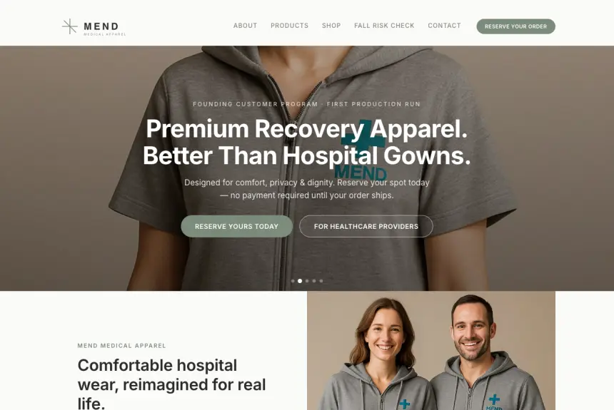
Recovery apparel and connected-care brand built end to end — storefront, seven product pages, a React fall-risk assessment tool, and the full technical SEO program behind them.
Soft, washable recovery gowns, residential nurse scrubs, medical-grade compression socks, the AirGuard™ fall-detection collar, and connected devices — a brand for patients and the people caring for them. I own every layer of it: positioning, identity, product pages, storefront architecture, and the code.
The storefront is hand-written static HTML, CSS, and JavaScript on Vercel — no framework, no build step for the site proper. That is a deliberate architectural call. A catalogue this size does not need a bundler, and skipping one buys near-instant loads and a site that will still build in five years.
The exception is the fall-risk assessment tool, the site’s lead magnet: a React application scoring fall risk against WHO data, with charts and a regional model. It runs through hand-written React shims rather than a bundler, so one interactive tool did not drag a toolchain onto the whole project.
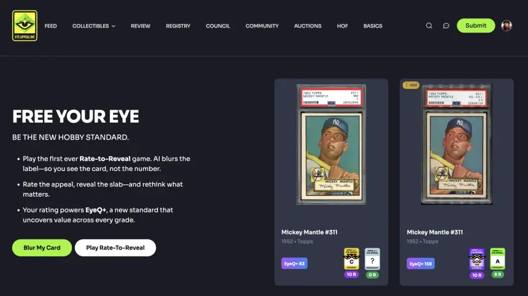
Community-driven collectible grading platform featuring an AI-powered Rate-to-Reveal game, the proprietary EyeQ+ scoring metric, and a global registry for sports card collectors.
A grading platform for sports card collectors, built around three things that had to work together: an AI-powered Rate-to-Reveal game, the proprietary EyeQ+ scoring metric, and a global registry deep enough that collectors would trust it as a system of record.
I architected the API integrations and workflow pipelines connecting internal systems to third-party platforms — each one designed as a reusable pattern rather than a one-off, so the next integration cost days instead of weeks.
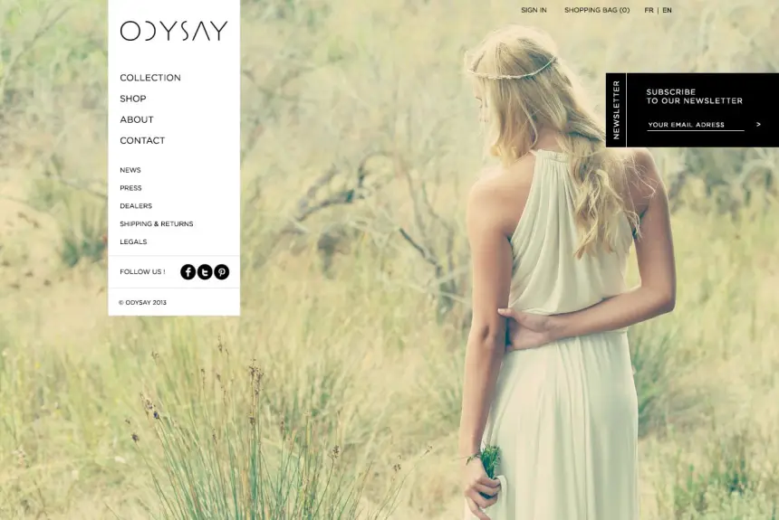
Architecture and Magento development — catalog structure, checkout flow, and the integration work behind a storefront built to scale past its first good quarter.
Storefront architecture and Magento build. The catalog structure and checkout flow were designed for what the business would look like after growth, not the shape it had on launch day — the difference between a store that scales and one that gets rebuilt in eighteen months.
Integration work tied the storefront to the systems behind it so inventory, orders, and product data stayed consistent without anyone reconciling spreadsheets.
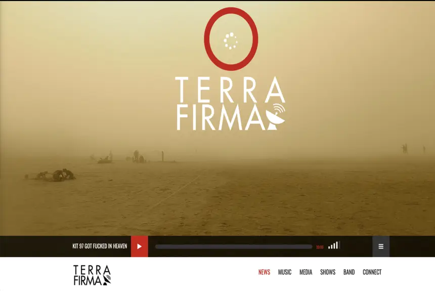
Architecture, design, and development end to end — identity through build, with a front end tuned for media-heavy pages that still load fast.
End to end: identity, design, architecture, and build. Music sites are media-heavy by nature — artwork, audio, video — and the usual outcome is a beautiful page that takes eight seconds to become useful.
The front end was tuned around that constraint from the start rather than optimized after the fact.
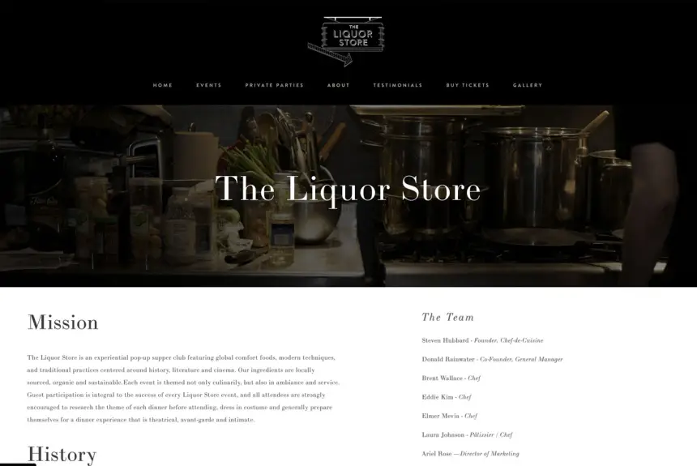
Architecture, design, and development for a San Francisco hospitality brand — booking, menus, and a storefront that reads as well on a phone at the bar as on a desktop.
A San Francisco hospitality brand where most traffic arrives on a phone, often in low light, often standing up. Booking and menus had to work in that context first and look good on a desktop second.
Design, architecture, and build were all mine, which meant the responsive behaviour was a design decision rather than a development compromise.
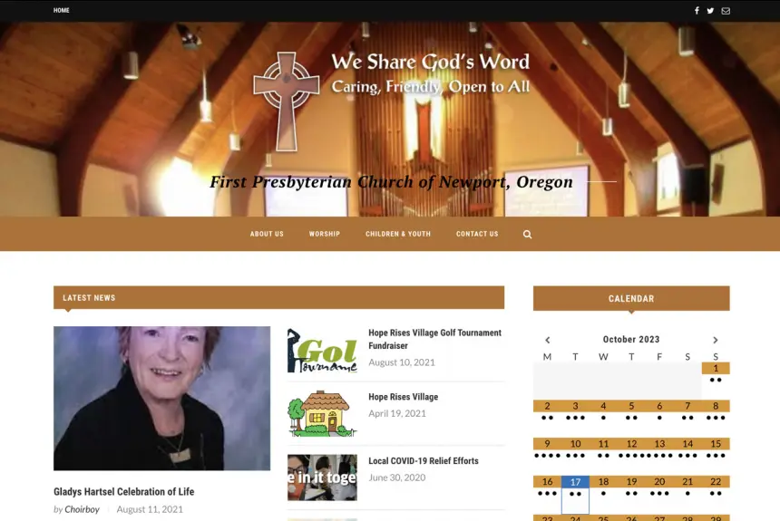
Architectural and WordPress site improvements — structure, accessibility, and hardening for a volunteer-maintained site that had to stay maintainable.
The constraint that shaped everything: the people maintaining this site after I left are volunteers, not developers. Anything clever enough to need me later was the wrong answer.
Structural and accessibility improvements, plus security hardening on a WordPress install that had accumulated the usual plugin debt.
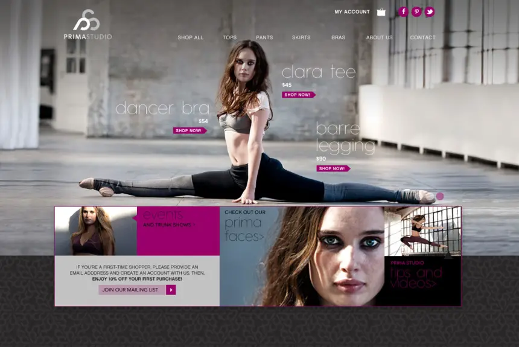
Ecommerce architecture, design, and development: Magento front and back end, a custom HTML5 video player, and analytics instrumentation.
Magento front and back end, a custom HTML5 video player built when that was still an argument rather than a default, and conversion instrumentation wired through the whole funnel.
Stock Magento was the baseline everyone accepted at the time. It did not have to be.
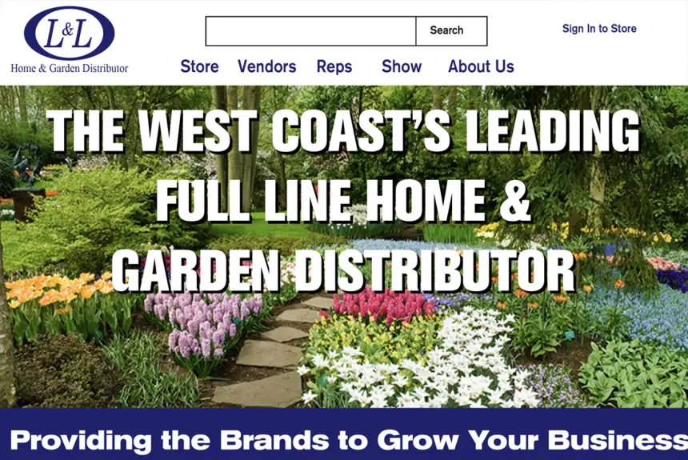
Ecommerce architecture, migration, and design — legacy to Magento 2.3, with 10,000+ products and 500,000 customer records imported without losing a row.
A migration off legacy ecommerce onto Magento 2.3, carrying 10,000+ products and 500,000 customer records. Data migrations are where ecommerce projects quietly fail — a dropped row is a customer who can't log in.
I also consolidated a tangle of legacy payment processors onto a single Braintree integration, and mentored a five-person team through the transition.
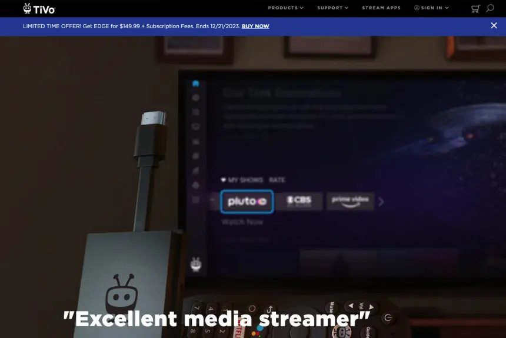
Led the transition to Magento Enterprise 2.4 — stakeholder coordination, timeline management, and a migration that landed clean.
The Magento Enterprise 2.4 transition was the visible half. The harder half was underneath: WebMethods and ERP integrations in Java and SOAP/XML against SQL Server, unifying POS, order, and product data across commerce and content systems.
POS and transaction data fed into Snowflake to drive segmentation modelling in Salesforce Commerce Cloud, while legacy on-premise CMS platforms moved to cloud-hosted WordPress, Magento, and AEM.
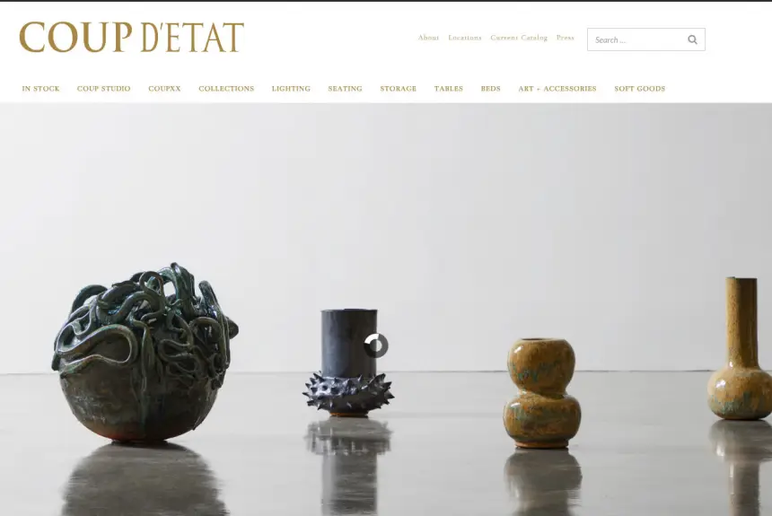
Designed and developed, with conversions to show for it — plus a Storybook component library that cut deployment cycles.
Six years of engagement, which is long enough to stop shipping features and start shipping standards. I established the architectural, security, and performance benchmarks used across all client work, and built the Storybook component library the team worked from.
On the storefront side: a custom WooCommerce module, a bespoke gallery experience, and analytics-driven optimization rather than opinion-driven redesign.
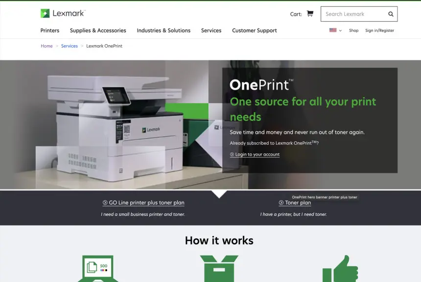
Integrated AEM with Magento for a seamless shopping experience, using Magento for inventory and cart.
AEM and Magento are both convinced they own the customer experience. The integration — built as custom plugins — let AEM handle content and Magento handle inventory and cart, without the seam showing to anyone shopping.
I also rebuilt the Magento 2.4 subscription module to offer custom toner color options, and wired React components to fetch real-time printer information via API.
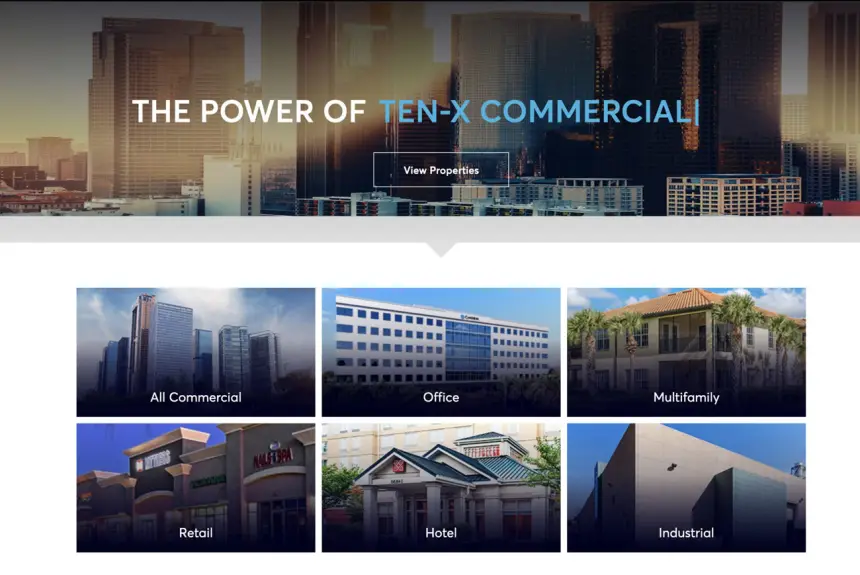
Site enhancements that improved functionality and user experience — plus SEO and auto-build deployment work.
WordPress platform enhancements on a property marketplace, driven from team meetings I led rather than tickets handed down. I contributed to the technical specifications and architecture design alongside the build.
The deployment side mattered as much as the features: auto-build procedures to production with real testing and validation, replacing a release process that depended on someone remembering the steps.
Nine roles in detail, ten more before them. Dates and titles follow the master resume — expand any row for what actually shipped.
Custom PDP, category and landing page layouts lifting add-to-cart 20% and retention 40%. Custom JS/CSS cutting page load 30%; responsive build reducing bounce 25%. Led PCI SAQ and scan to full compliance.
Custom UGC platforms and video tooling for Fortune 500 brands. Video player rebuild cutting buffering 50%.
Magento front and back end, HTML5 video player, analytics and conversion instrumentation — 70% performance gain over stock Magento.
Full site, print and email identity; CMS front and back end; SEO program. 80% performance gain over standard builds.
Ported a Flash-based game to HTML5 and jQuery Mobile, halving load times. Companion iOS and Android apps.
UI design through CMS build and commerce integration. SEO program lifting visibility 220%.
Client campaign builds, third-party data integration, and front-end performance optimization.
Independent practice serving enterprise, SMB and agency clients across architecture, build and creative direction.
Web and email builds against a proprietary CMS in a Linux/Apache/Tomcat environment.
Site strategy, cross-platform build, and collateral production.
Not a wish list. Twelve categories, all of it used in production on somebody’s deadline.
Strategy, execution, and taste. Most people bring one. The interesting projects need all three in the same head.
With a strategic vision, I craft tailored web solutions that align with each client’s objectives — built for long-term scalability, security, and seamless functionality. My work in innovative frameworks lets me design architectures that adapt as the landscape moves, and I prioritize open communication to translate ideas into practical, future-proof systems.
Twenty-five years of hands-on delivery across enterprise CMS, commerce, and integration work. I write the code, run the code review, and enforce the standards — then document it so the next developer doesn’t have to reverse-engineer my thinking.
A background in art direction and 3D animation, not just engineering. That means pixel-perfect responsive builds, a real eye for hierarchy and typography, and interfaces that hold up next to the design comp instead of approximating it.
Career totals up top — the client count is every organization named on this page, not a rounded-up guess. Verifiable outcomes from named engagements underneath.
Five people who worked with me directly — leadership, engineering, content strategy, and the client side.
Every time I have had the opportunity to work with Steve he has provided great creativity on a broad variety of projects producing a better result than would have been obtainable without his input and efforts. I would recommend you take the opportunity to work with Steve if you get it as the demand for his time is high.
Steven was thrown into the deep end of a very large codebase, of which he did well to make sense, with little documentation. He is the kind of engineer that doesn’t pass the buck, and he’ll obsess over finding a solution until he achieves the unachievable. His knowledge is very broad. He is an optimist and a pleasure to work with.
I have worked with Steve in many capacities. His ability to design, develop, and envision what the client needs is second to none. Steve truly brings his best creative juices and code skills to each and every site he creates. Managing his clients’ needs while thinking of the greater good of the site is a juggling act Steve has mastered. A true asset.
Steven Hubbard has designed and built two beautiful websites for me, not to mention designed countless catalogues, look books, promotional brochures, and all other marketing materials. For a fashion-based company it is of utmost importance that everything we do looks fresh and creative. Steven is a true artist and I am eternally grateful for his creative direction as well as his business acumen and technology skill set.
Steven’s positivity and charisma is contagious. Even when tasked with impossible missions, Steven is always upbeat and nice to everyone while consistently meeting very tight agency deadlines. Steven is a very strong asset for the team and comfortable working on the highest profile projects for some of our most prominent Fortune 500 customers, including Coke, P&G, and Frito-Lay. He consistently delivers top-notch, enterprise-quality code, and is comfortable context-switching between front-end and back-end code and between the software codebase and consumer-facing websites.
Let’s build
something
amazing.
Available now for contract and full-time work — solutions architecture, AEM and Edge Delivery, commerce platforms, and integration projects. Remote nationwide, comfortable on-site for the parts that need a room.
West Coast, USA
Remote nationwide · on-site as needed
AEM · Shopify · eCommerce Architecture